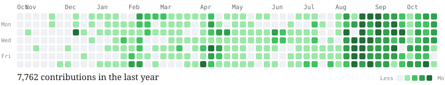

Code
| Project | Description |
|---|---|
|
CONTINUUM Python, MCP, PostgreSQL |
Reliability infrastructure for long-running AI agents. Model- and framework-agnostic layer with semantic checkpoints, an idempotent action ledger, and a hash-chained event log. Over 2,800 tests; 0 duplicate side effects in hard-crash benchmark replays. Community project with 45+ contributors. [GitHub] |
|
SNAGLINE Python, LangGraph, HTTP |
Real-time zero-dependency failure detection for AI agents, targeting loops, cascades, latency drift, token runaway, and stagnation. Median overhead of ~1.5 µs/step with 0 false alarms on 41 healthy control runs. [GitHub] |
|
QwerySmith PyTorch, QLoRA, GGUF |
Three fine-tuned Qwen3-4B models for text-to-SQL tasks released as adapter, merged, and GGUF weights, improving in-distribution execution accuracy from 67.2% to 88.5%. [GitHub] |
Activity
Public contributions and commit activity across open-source repositories (@Cyrax321).

Open-source contributions
24 pull requests to tensorflow/tensorflow: 21 merged, 3 approved.
- Fixes across TensorFlow Core, Grappler, MLIR, and XLA covering numerical correctness, gradient stability, compiler optimizations, dtype handling, and runtime stability.
- Singular-matrix gradient failures, an unsound Reciprocal compiler rewrite, ArgMax/ArgMin optimization correctness, and NaN handling in cumulative log-sum-exp.
- Added and improved comprehensive test coverage across the fixes.
Technical skills
| Languages | Python, C, C++, Java, SQL, Shell |
| AI / ML | PyTorch, TensorFlow, Keras, Hugging Face, OpenCV, LangChain, LangGraph |
| Tools | Git, GitHub Actions, Docker, PostgreSQL, SQLite, Linux |